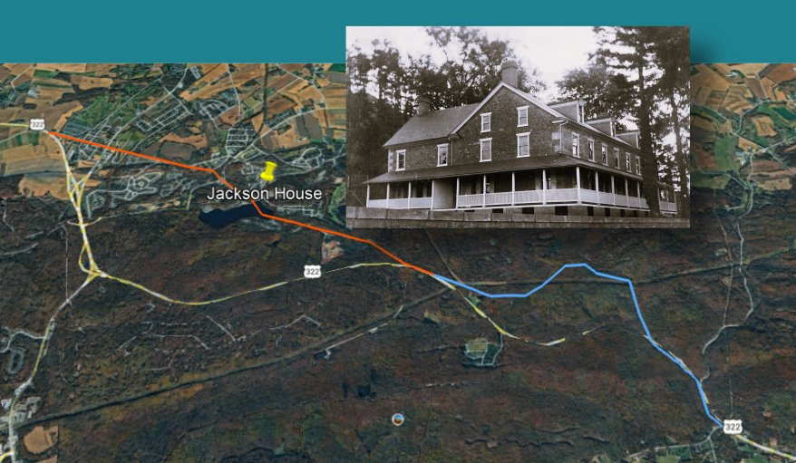
The first installment of this "On the Road to Lebanon County" series brought attention to this nearly-200-year-old structure, believed to have been a tavern on the old Horseshoe Turnpike that went through in 1803.
Further discovery leads to a later map that doesn't show the turnpike very near Jackson House. Pulling on one string has seemed to unravel another, the kind of thing that keeps historians asking more questions: "Why don't the pieces fit together neatly?" Why build that great house in that location? The 1830s date is assumed, based on similar sandstone architecture of that time, but could it be older than that?
This installment examines those pieces.
The later story is well-known, about it being the Bethlehem Steel office and Cornwall Manor's daycare center. "Jackson House" may have started as a roadhouse, but when it was built in the 1830s it was at least 250 yards away from the turnpike, separated by a stream bed — not a convenient roadside stop. More likely it could have been a village tavern on the old "Boyd Street."
It may have served a purpose related to the Cornwall Iron Furnace, the ore banks, and the "iron plantation" or community that also lie within that 250-yard radius. These were the center of the universe as Cornwall transitioned from the 18th to 19th century.
A Picture and 1,000 Words Later…
The best resource for telling that story is an original rendering of the enterprise that began as Cornwall.
Around 1800, just two decades after our nation's independence, Robert Coleman had acquired the Cornwall property from the Grubb family. It seems he commissioned an unknown artist who rendered the features of the property in a large drawing which now hangs in Cornwall Manor's Gateway library.
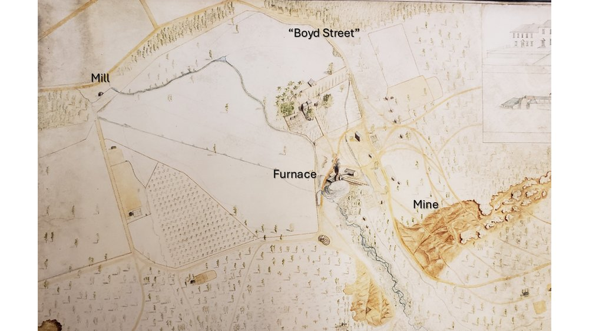
This oft-studied drawing depicts the estate with the mansion top-center, prior to its early industrial period renovation. Likewise, the Cornwall Iron Furnace is shown prior to its 1850s conversion to steam power. Missing entirely, of course, are the open pit mine and Miners' Lake (c. 1970).
Instead, the early mining activity was focused mostly on the surfaces of Big Hill, with significantly less activity on Middle Hill and Grassy Hill. Furnace Creek, a marshy stream, flows up to the furnace and then westward. Upstream a head race is faintly visible, feeding a mill pond, then carrying water by a flume to the furnace wheel-house.
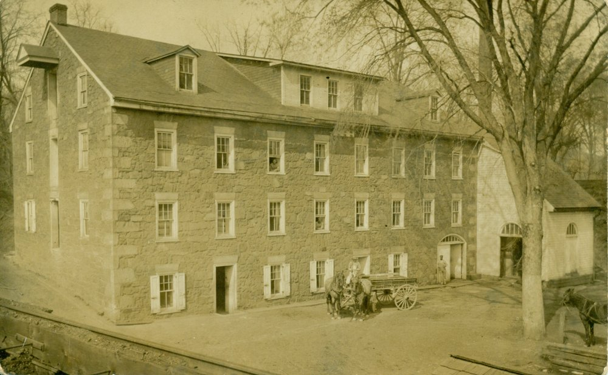
Another headrace is diverted downstream of the furnace, across the western side of the estate to the Grist Mill. The mill, surviving until 1960, is well-documented in various maps and photographs.
As shown in the drawing, the estate is dotted with orchards and fields, and a few buildings.
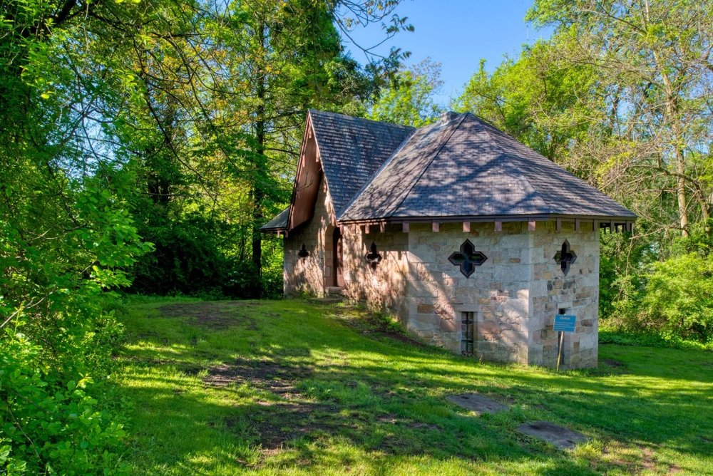
Hard to distinguish in the drawing is the Abattoir, uphill from the furnace and just below Jackson House, used for slaughtering animals and smoking meats to feed the workers' families of the "iron plantation," as it was known.
The drawing pre-dates Jackson House, but other structures are shown that hint at a community that dwelt in the immediate area of the furnace and mining activity. Some of these are built on lower ground, sensibly placed near the creek.
Just below Jackson House on furnace property are several levels of terraced gardens, well above stream level. Higher ground suggests greater prestige for Jackson House, whereas lower ground near water would be for poorer residents and their garden plots, at the greater risk of mosquitos and flooding.
Roads to Cornwall
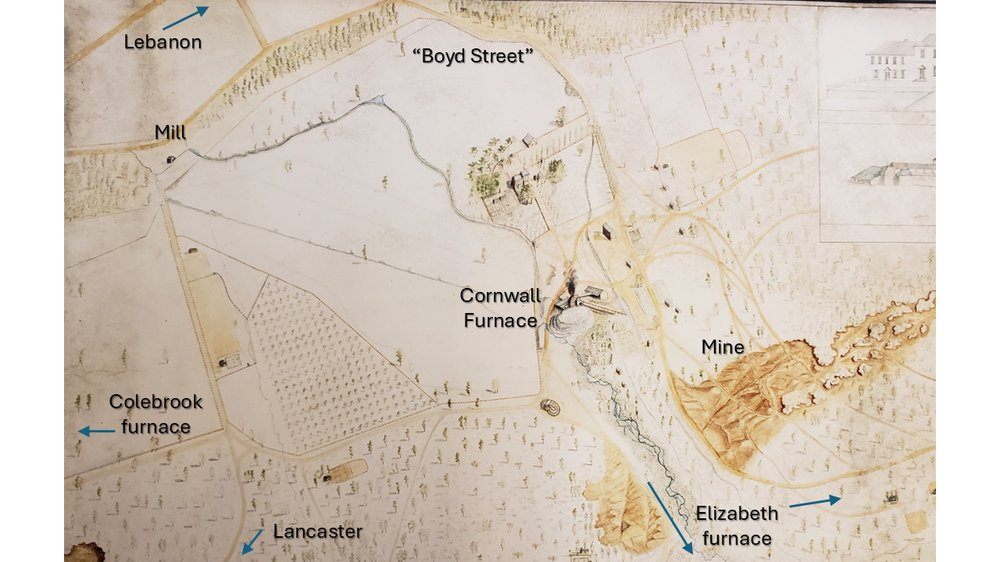
The other distinguishing feature of the old drawing are the roads of that day, which are the intended focus of this installment. Some have survived until the present, others have been transformed. To the lower left is the road traveling west to Coleman's Colebrook estate and furnace (built in 1791), known today in sections as Ironmaster Road and Old Mine Road. (Mount Gretna would not exist for almost another century.)
As modern motorists should agree, the roads from the mine to the other furnaces went over difficult, winding terrain — especially eastward (today's Route 322, 28th Division Highway), the road heading to Coleman's Elizabeth furnace estate, Speedwell Forge, and Grubb's Hopewell Forge. Back then it was two roads, as shown, that eventually converge going up the mountain.
Before Coleman, and Grubb before that, it was Jacob Huber who began transporting ore on the trail to Elizabeth (Brickerville) around 1750.
Heading southward was the road over South Mountain to Manheim and Lancaster. Both this and the road north to Lebanon will be featured in a later installment.
The road labeled "Boyd Street" was not known by that name until much later, after the retirement of J. Taylor Boyd (d. 1918), General Superintendent for the Cornwall Ore Bank Company.
With one exception, Boyd Street retains the same footprint today as back then. It rises from Cornwall "center" near the area of the mill, climbing over the slate ridge that extends westward along Freeman Drive to Alden Villa and Bismarck/Quentin. Eventually another generation of Colemans built the gatehouse, providing a more leisurely entrance with convenient access to Cornwall's train depot.
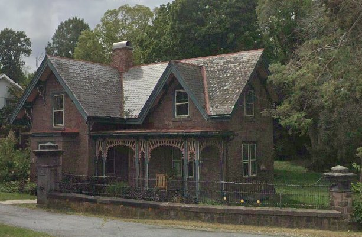
Traveling Southeast
Until the 19th-century improvements that led to the Union Canal and Lebanon as a transportation hub, the grand entrance to the mansion was — and perhaps still is — the lane that proceeds down to the furnace, and the roads beyond. That was the center of commercial activity for the iron trade. The cannon produced for the Navy in Philadelphia were shipped up that road.
As shown in the drawing, there are two roads heading in that direction, leaving us to ponder. They are separated initially by Furnace Creek and join further up the mountain.
A possible explanation is that transportation from colliers' charcoal operations on sites across the mountain led to the development of multiple roads, the most direct path to the furnace being the most sensible.
The easterly route extending from "Boyd Street" can be seen curving around the base of mining activity on Big Hill. It proceeds eastward to the area where Miners Village was later constructed by the Cornwall Ore Bank Company between 1867 and 1886. Prior to that, it passed closer to the area on the back of Big Hill that became known as "Elizabeth mine," so-named as being the source of ore for the Elizabeth furnace.
As shown in this 1947 aerial photo, Boyd Street used to proceed through Miners Village, directly up into the hill, and did not meet the Horseshoe Pike until the point where Boyd Street now terminates on the new Route 322, "28th Division Highway."
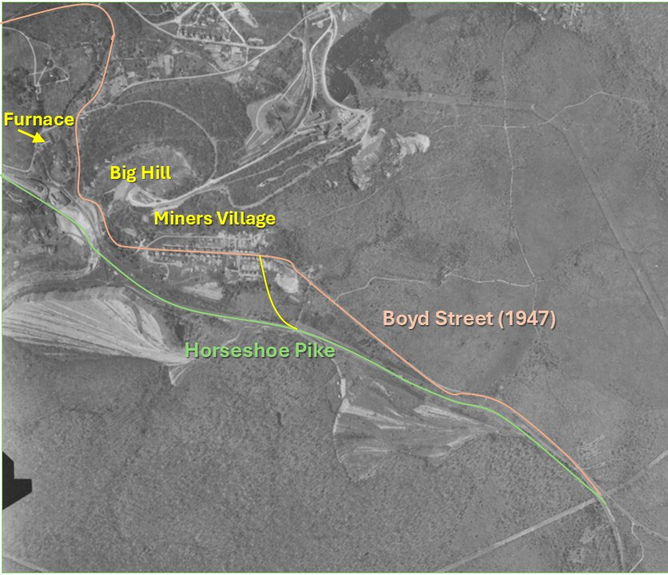
Well after Miners Village was built and Boyd Street was formally so-named, Boyd Street and Horseshoe Turnpike merged much further down the mountain, just south of the village. Today motorists speeding east through Miners Village come to a sharp right-hand turn that forces them to slow down.
This change diverted Boyd Street, joining the grade of the Horseshoe Pike, and the old Boyd Street faded into the woods. The road passed near the former "H&K Materials" site, now occupied by PRL Industries and under development by Byler Holdings, LLC.
Changes to the Landscape
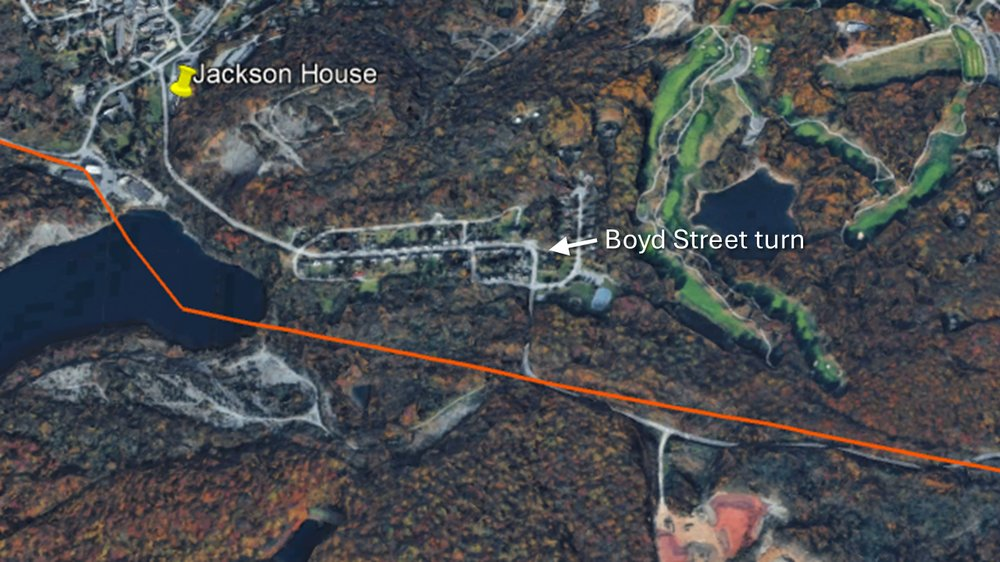
Undermined by Progress
By the early 1960s, the expansion of the open pit disrupted the original path of the Horseshoe Pike and the Cornwall Railroad. Passenger service south to Penryn had ceased in 1929, given the advancements of automobile transportation. The expansion of the pit forced the removal of the rail lines over the mountain, which had been used for a while in support of logging operations.
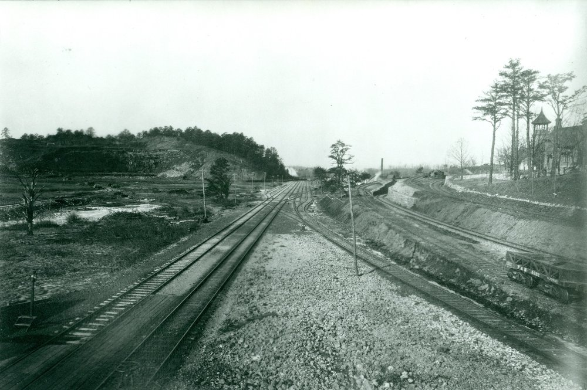
Moving the turnpike, joining it with Boyd Street, required the demolition of several magnificent structures that had survived since the 1860s, including the Ore Bank superintendent's office and home — of none other than J. Taylor Boyd (he had passed in 1918; the last resident was Sheldon Shale, manager of the Cornwall and Lebanon divisions of Bethlehem Steel).
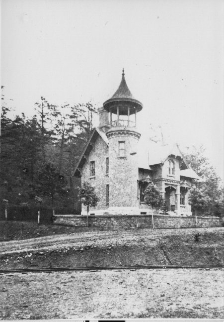
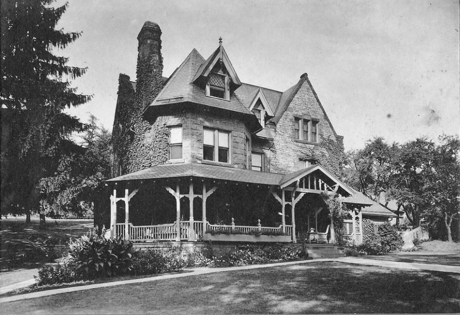
A striking feature of the office was the bell tower that could be seen looking straight down "Boyd Street" from Miners Village. It served to communicate and regulate the mine workers.
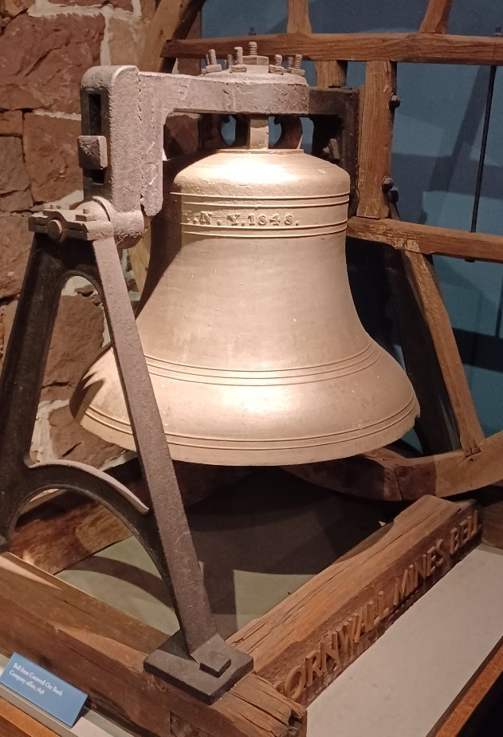
Traveling the Horseshoe Turnpike
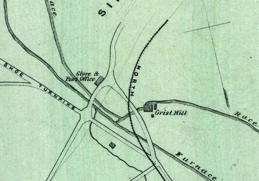
East of Cornwall
Prior to the 1970s improvements to Routes 72 and 322, the Horseshoe Turnpike passed right through Cornwall by the grist mill, proceeding on past the furnace and mining activity. A map from 100 years earlier shows it continuing southeast below the recently-erected Miners Village.
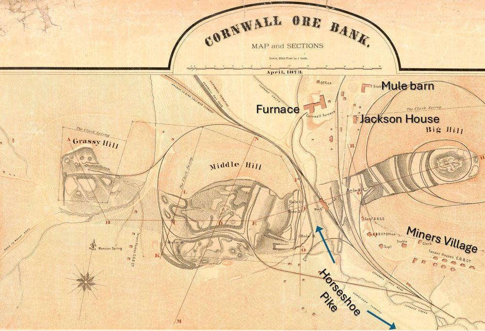
After it merged with the road now called Boyd Street, the turnpike proceeded on a path over South Mountain probably coinciding with the current path of the 28th Division Highway. But remnants of the old "Boyd Street" road show a transition immediately to Mountain Lane. In the 18th century, it is possible that, given the terrain, wagons followed an easier path on relatively flatter ground, cutting over to what is called today Walnut Springs Road and joining up with the stream called Walnut Run. This joins up with Hammer Creek about where Route 322 now crosses near a trailhead, and proceeds down to Speedwell Forge.
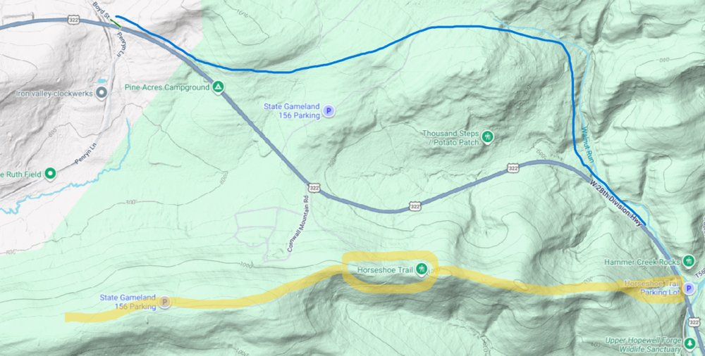
Not coincidentally, there is a hiking trail in the region by the name Horseshoe Trail, not to be confused with the Horseshoe Turnpike. It is a 140-mile trail starting at Valley Forge National Historical Park, connecting to the Appalachian Trail, passing right through our Lebanon County on the way. It runs roughly parallel to the Horseshoe Turnpike, crossing it twice.
The trail is very popular, with the parking lot at Hammer Creek on Route 322 often full of cars.
Traveling Westward on a Trail of History
The Horseshoe Pike followed the trail traveled by settlers moving herds of animals westward (credit: VisitLebanonValley.com). One famous family's journey is mentioned in an account of Daniel Boone's biography. He was 16 when, in 1750, his family left their homestead in Berks County for Virginia, stopping at the home of their Quaker friend Conrad Weiser in Womelsdorf on their way to crossing the Susquehanna at "Harris' Ferry."
This journey would take them through Lebanon Valley, down "Route 419" through Schaefferstown to Cornwall, and west to Harrisburg.
Not until passing through Lebanon Valley did the Downingtown, Ephrata and Harrisburg Turnpike, chartered in 1803, acquire the name "Horseshoe Pike." The name seems to have originated from blacksmithing and wagon-repair businesses in Campbelltown, where the Boones may have stopped for lodging and repairs.
Old roads were often formed by trails made by deer or herding animals, and native American hunters. But it is not surprising that it also served the interests of the influential and wealthy iron master Robert Coleman. The iron from the furnace (under the Grubb family) served an important purpose in the War of Independence and would not be forgotten.
Coleman's service in Pennsylvania politics had begun in 1776 at the state constitutional convention, followed by the Pennsylvania legislature; later a presidential elector and confidant of George Washington, while also serving as an associate judge of Lancaster County for twenty years. In 1802 he began serving as a trustee of Dickinson College until his death in 1825.
Next Time
The short version of this story? Still looking for the roots of the Jackson House. Other than pointing to interesting features of our past, what we know for certain is that it was the home of some of our early citizens.
Stay tuned for more roads and surprises.
Your feedback and insights are welcome!
Local historian Mark Cain and his history of local railroads.
Friends of the Cornwall Iron Furnace for their constant assistance, including Mike Trump and Mike Weber.
Originally published on LebTown, July 14, 2026.